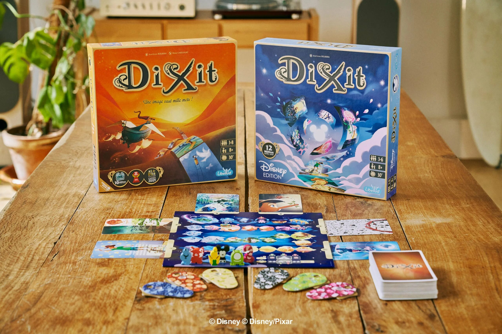

Dixit (Диксит)
Тип: игра на ассоциации, воображение и интуицию
Игроков: 3–6 человек
Время партии: 30–60 минут
Возраст: от 8 лет
Сложность: очень низкая (правила объясняются за 2–3 минуты)
Состав комплекта
В коробке находится всё необходимое для игры:
- 84 карты с уникальными сюрреалистичными иллюстрациями;
- игровое поле — внутренняя часть коробки — для подсчёта очков;
- 36 жетонов для голосования: 6 наборов по 6 жетонов с номерами от 1 до 6;
- 6 деревянных фигурок кроликов разных цветов для подсчёта очков.
Правила и механика
Игра проходит по раундам. В каждом раунде один из игроков становится Рассказчиком.
- Ход Рассказчика. В начале раунда у каждого игрока 6 карт. Рассказчик тайно выбирает одну карту из своей руки и придумывает к ней ассоциацию — слово, фразу, звук или историю. Он озвучивает её, не показывая карту остальным.
- Ход остальных игроков. Каждый выбирает из своих шести карт ту, которая, по его мнению, лучше всего соответствует ассоциации Рассказчика, и выкладывает её на стол лицом вниз.
- Перемешивание и голосование. Все выложенные карты перемешиваются и выкладываются в ряд лицом вверх. Каждый игрок, кроме Рассказчика, угадывает, какая карта принадлежит Рассказчику, и отдаёт жетон с номером выбранной карты. Голосовать за свою карту нельзя.
Подсчёт очков
- Все угадали карту Рассказчика или никто не угадал: Рассказчик получает 0 очков, каждый из остальных игроков — по 2 очка.
- Карту угадали некоторые, но не все: Рассказчик и игроки, угадавшие его карту, получают по 3 очка.
- Бонусные очки: каждый игрок, кроме Рассказчика, получает 1 очко за каждый голос, отданный за его собственную карту.
Конец игры
Игра заканчивается, когда заканчивается колода карт или когда один из игроков набирает 30 очков. Побеждает игрок с наибольшим количеством очков.